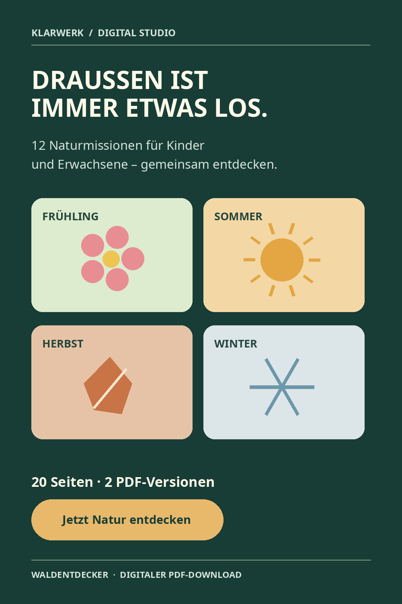
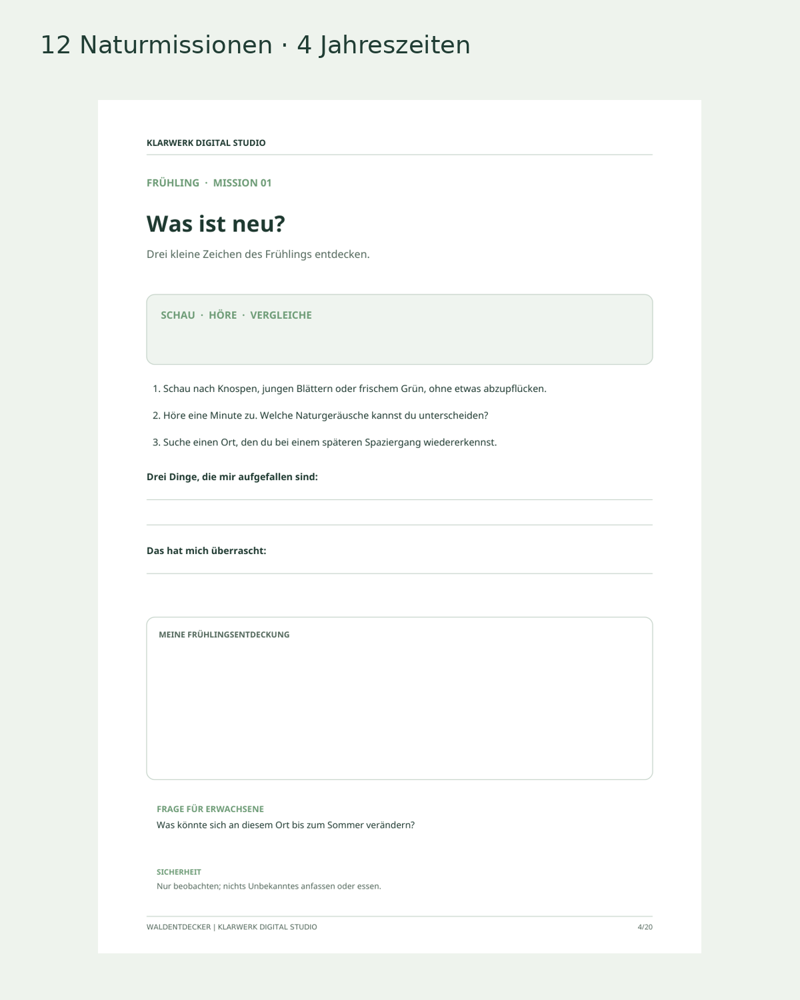
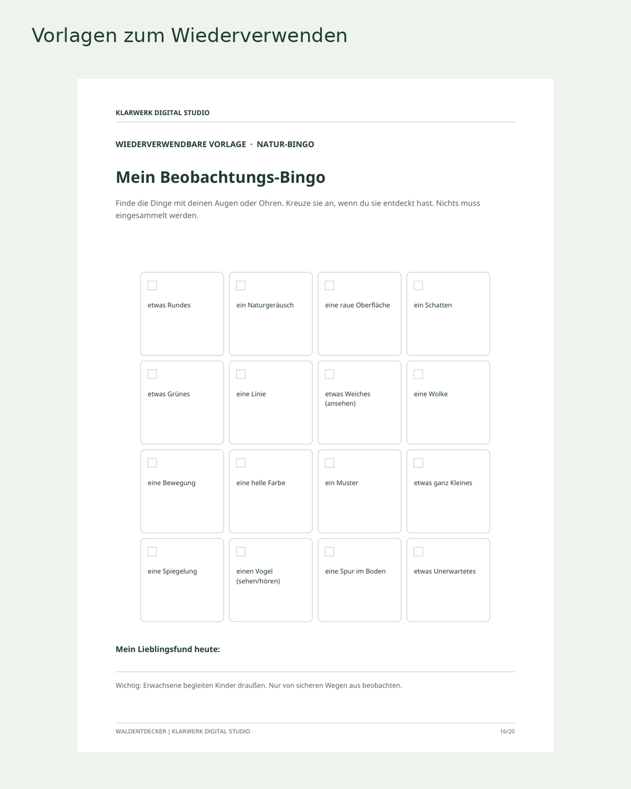
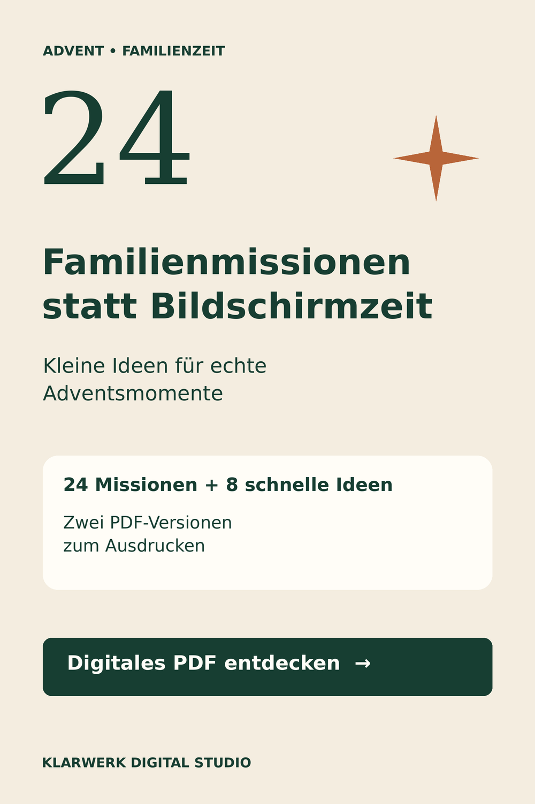

Research
Buyer intent, competitor products, scope, pricing hypotheses and differentiation.
Klarwerk Digital Studio tests how thoughtful digital products can move from market research through original creation, rigorous QA, publishing and organic distribution — using a deliberately lean, AI-assisted toolchain.

Research → original design → QA → publishing → measurement. Each release has evidence and a human quality gate.
Buyer intent, competitor products, scope, pricing hypotheses and differentiation.
Original content, Canva visual assets, full-color and printer-friendly layouts.
Print legibility, claims, consistency, copyright, file delivery and mobile review.
Payhip listing, product previews, SEO copy and Pinterest creative distribution.
Visits, outbound clicks, actual paid orders and keep / iterate / stop decisions.
This is the documented target operating model. Some stages are implemented, others remain iterative; the project is not presented as fully autonomous or commercially validated.
Two German-language printables are publicly listed on Payhip. The visuals below are original project assets, including a real PDF preview — not invented product mockups.
24 family activities, eight extra ideas and color/print-friendly PDF editions designed for shared Advent moments. The project included product copy, original visuals, delivery checks and storefront QA.
View actual listing ↗

A four-season nature journal with 12 missions, observation space and reusable activities. The digital edition went through content, layout and print-readability review; a separate paperback concept is being researched.
View actual listing ↗


Public listing links were recorded as live in the 2 November 2026 project control documents. Store availability, payment flows and performance can change; no sales or ROI are claimed here.
I define the workflow, priorities and acceptance criteria. ChatGPT supports research and briefs; Canva produces visuals; Drive holds source and QA evidence; Payhip publishes; Pinterest and Metricool support organic discovery.
Automation helps only when data is reliable and release decisions are reviewed.
Research synthesis → original copy and layout → PDF checks → release candidate → documented handoff.
Product preview → search-friendly listing → original pin creatives → scheduled distribution → evidence-based review.
Separate real revenue from test orders, and measured visitor response from assumptions. Scale only the steps that prove useful.
Drawn from the Klarwerk operating SOP, Master Roadmap and live Control Center: two complementary execution lanes, a measurable acquisition loop and a separate KDP research branch. It distinguishes confirmed releases from work in progress.
Buyer intent, 5–10 relevant product benchmarks, original differentiation, fees and pricing hypotheses.
AI-assisted briefs, Canva design, source files in Google Drive, PDFs and authentic preview assets.

 ChatGPT
ChatGPTGerman copy, originality and rights checks, print readability, cover/preview fidelity, practical acceptance criteria.
The browser/publishing workflow independently reviews live listings and mobile presentation. Existing prices, legal and payment settings remain outside unapproved automation.

Payhip product pages, original galleries and German SEO/blog guidance lead into Pinterest Business pins and scheduled distribution through Metricool.

Pinterest impressions/outbound clicks, Payhip product visits, paid orders and fees feed a Google Sheets Control Center. Unavailable values remain unknown.

Documented feasibility and a proposed original paperback adaptation of Waldentdecker. The printed book, independent QA and publication are not complete. No KDP edition is claimed as live.
Evidence: Klarwerk Autonomous Operations SOP, Master Roadmap and Control Center (November 2026). Work Agent 02 handles publishing/browser tasks; Backoffice Agent 03 handles research and content/QA work during their scheduled runs — not continuously in the background.
CanvaGoogle DrivePDF / print QAPayhipPinterest BusinessMetricoolSEO / product guidesGoogle SheetsWork Browser Agent 02Backoffice Agent 03Amazon KDP — researchAmazon KDP is the researched next step for an original paperback adaptation of Waldentdecker — not a claim that an existing PDF has already become a book.
The engine needs print-specific content, a professionally prepared cover, trim and margin checks, independent QA and viable unit economics before any publication decision.
Current status: feasibility and development. No KDP edition is represented as live.
Practical product operations: scoped requirements, original assets, release checks and clear reporting — with human accountability.
The goal is not to produce more content. It is to deliver something useful, reliably — and know whether it worked.